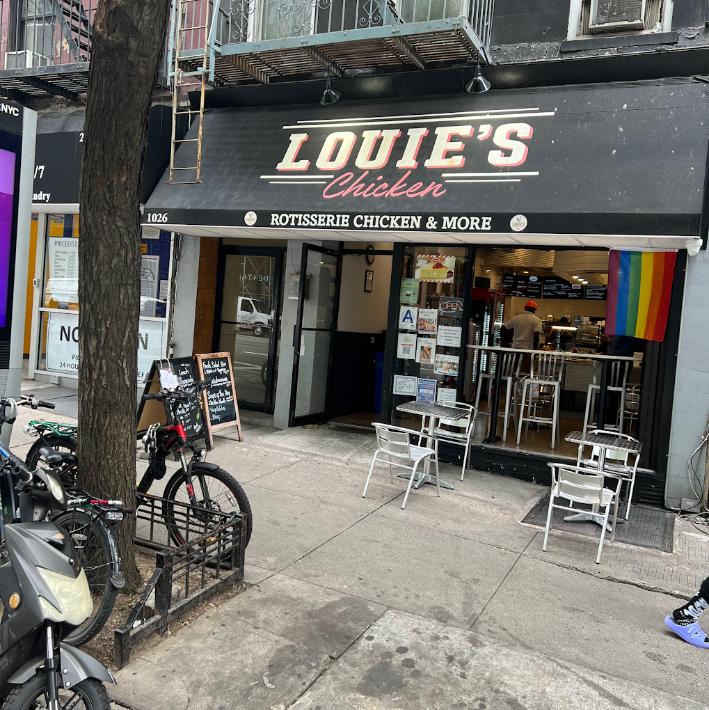
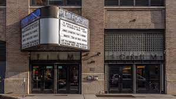

NYC Places
Favorite Spots
| Place | Location | Why I Enjoy this Place | Image |
|---|---|---|---|
| Central Park | 59th Street to 110th Street | I enjoy this place because it is one of my favorite parks in all of NYC. The scenery is very nice, and the space is huge. | |
| Louie's Chicken | 1026 2nd Ave | This is my favorite chicken place in NYC. The chicken is very tasty and well seasoned. |  |
| Film Forum | 209 W Houston St | This is my favorite movie theater place. I enjoy watching films here. |  |